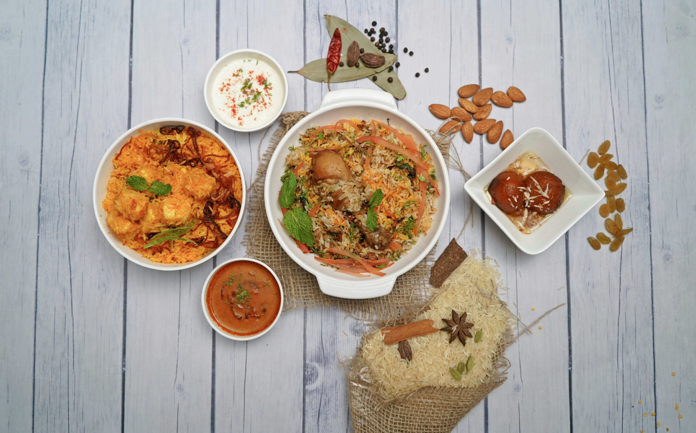

This is a simple vegetarian recipe that helped me a lot when I first started cutting down on meat. My version is a very, VERY, simplified version for when you do not want to spend too much time cooking but still want something nutritious and delicious.
;Palak is an indian dish with different variations. Some use paneer, some use lentils, and many have spinach in them. This recipe uses lentils so if they are not to your taste, check out another version of the dish!